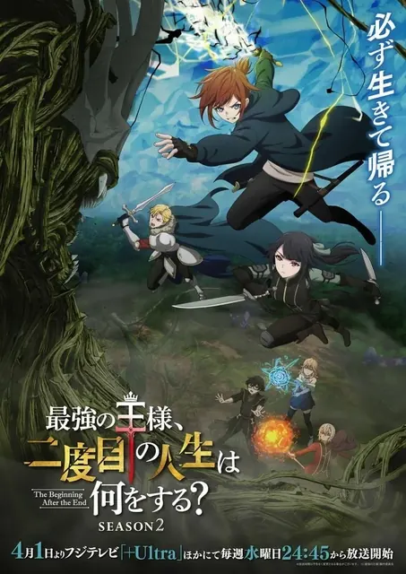

002Re:从零开始的异世界生活 第四季 丧失篇Re:ゼロから始める異世界生活 4th season 喪失編TV · 11话 · 2026-04-08 · 轻小说改TV · 11话 · 04-08 · 轻小说改恋爱奇幻7.85859
006石纪元 科学与未来 第3部分Dr.STONE SCIENCE FUTURE 第3クールTV · 13话 · 2026-04-02 · 漫画改TV · 13话 · 04-02 · 漫画改奇幻科幻7.21789
008女神“异世界转生想成为什么”我“勇者的肋骨”女神『異世界転生何になりたいですか』俺「勇者の肋骨で」TV · 12话 · 2026-04-07 · 轻小说改TV · 12话 · 04-07 · 轻小说改喜剧恋爱7.14182
009木头风纪委员和迷你裙JK的故事ポンコツ風紀委員とスカート丈が不適切なJKの話TV · 12话 · 2026-04-06 · 漫画改TV · 12话 · 04-06 · 漫画改喜剧恋爱7.12406
014小书痴的下克上 〜为了成为图书管理员而不择手段〜 领主的养女本好きの下剋上~司書になるためには手段を選んでいられません~ 領主の養女TV · 24话 · 2026-04-04 · 来源未知TV · 24话 · 04-04 · 来源未知奇幻日常6.9328
015『我的英雄学院』No.170+1『More』『僕のヒーローアカデミア』No.170+1『More』TV · 1话 · 2026-05-02 · 漫画改TV · 1话 · 05-02 · 漫画改战斗校园6.9114
016北斗神拳 -FIST OF THE NORTH STAR-北斗の拳 -FIST OF THE NORTH STAR-TV · 14话 · 2026-04-10 · 漫画改TV · 14话 · 04-10 · 漫画改奇幻战斗6.8279
039欢迎来到实力至上主义的教室 第四季ようこそ実力至上主義の教室へ 4th SeasonTV · 16话 · 2026-04-01 · 轻小说改TV · 16话 · 04-01 · 轻小说改恋爱战斗6.02601
044关于虽然逃走的鱼很大、但钓上来的鱼却太大了这件事逃がした魚は大きかったが釣りあげた魚が大きすぎた件TV · 12话 · 2026-04-01 · 来源未知TV · 12话 · 04-01 · 来源未知恋爱奇幻5.9739
045和班上第二可爱的女孩成为朋友クラスで2番目に可愛い女の子と友だちになったTV · 12话 · 2026-04-07 · 轻小说改TV · 12话 · 04-07 · 轻小说改喜剧恋爱5.82164
049卡片战斗先导者 Divinez 幻真星战篇续播カードファイト!! ヴァンガード Divinez 幻真星戦編TV · 12话 · 2026-01-10 · 原创动画TV · 12话 · 01-10 · 原创动画奇幻战斗5.732
052身为悲剧始作俑者的最强邪恶BOSS女王为民竭心尽力。 第二季悲劇の元凶となる最強外道ラスボス女王は民の為に尽くします。 Season 2TV · 12话 · 2026-04-07 · 轻小说改TV · 12话 · 04-07 · 轻小说改奇幻异世界5.4342
057转生成自动贩卖机的我今天也在迷宫徘徊 第三季自動販売機に生まれ変わった俺は迷宮を彷徨う 3rd seasonTV · 12话 · 2026-04-01 · 轻小说改TV · 12话 · 04-01 · 轻小说改喜剧奇幻5.3270
058关于邻家的天使大人不知不觉把我惯成了废人这档子事 第二季お隣の天使様にいつの間にか駄目人間にされていた件2TV · 12话 · 2026-04-03 · 轻小说改TV · 12话 · 04-03 · 轻小说改恋爱校园5.21159
061最强的职业不是勇者也不是贤者好像是鉴定士(伪)的样子?最強の職業は勇者でも賢者でもなく鑑定士(仮)らしいですよ?TV · 12话 · 2026-04-04 · 轻小说改TV · 12话 · 04-04 · 轻小说改奇幻冒险4.8530
063在异世界获得超强能力的我,在现实世界照样无敌~等级提升改变人生命运~ SP異世界でチート能力を手にした俺は、現実世界をも無双する~レベルアップは人生を変えた~ スペシャルTV · 1话 · 2026-03-30 · 轻小说改TV · 1话 · 03-30 · 轻小说改奇幻战斗4.7365
068灰原同学重返过去,开启所向无敌的第二轮青春游戏灰原くんの強くて青春ニューゲームTV · 12话 · 2026-04-02 · 轻小说改TV · 12话 · 04-02 · 轻小说改恋爱奇幻4.5864
069最强王者的第二人生 第二季最強の王様、二度目の人生は何をする? Season 2TV · 12话 · 2026-04-01 · 漫画改TV · 12话 · 04-01 · 漫画改奇幻冒险4.5317
001少女与战车 lovelove大作战! 第4幕ガールズ&パンツァー もっとらぶらぶ作戦です! 第4幕MOVIE · 3话 · 2026-04-10 · 漫画改MOVIE · 3话 · 04-10 · 漫画改战斗校园7.1123
002电影 LoveLive!莲之空女学院学园偶像俱乐部 Bloom Garden Party映画 ラブライブ!蓮ノ空女学院スクールアイドルクラブ Bloom Garden PartyMOVIE · 1话 · 2026-05-08 · 来源未知MOVIE · 1话 · 05-08 · 来源未知音乐校园6.9210
003机动警察 EZY 第一章機動警察パトレイバー EZY File 1MOVIE · 3话 · 2026-05-15 · 原创动画MOVIE · 3话 · 05-15 · 原创动画喜剧科幻6.7200
004最终乐章 吹响吧!上低音号 前篇最終楽章 響け!ユーフォニアム 前編MOVIE · 1话 · 2026-04-24 · 轻小说改MOVIE · 1话 · 04-24 · 轻小说改音乐校园6.3165